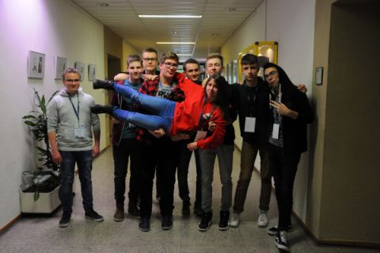

ASiMR
Aplikacja Symulująca i Monitorująca Ruch
ABOUT US
We are a group of students from Opole, still learning to code :) We are making projects like this to progress in programming languages like : HTML, JS, CSS and Python.

ABOUT PROJECT
Na targach nowych technologii w 2018 roku postanowiliśmy w jedną noc stworzyć pewną prostą aplikacje w frameworku javascript'u - był to prosty zbiór aplikacji zręcznościowych sprawdzających refleks, skupienie itp. Po zdobyciu przez projekt 2 miejsca na tle ponad 15 innych, postanowiliśmy go rozwinąć. Od tego czasu rozwijamy aplikacje, zyskała ona również własną stronę internetową. Celem projektu jest przede wszystkim nauka - bo przy tworzeniu uczymy się naprawdę wiele! Mamy nadzieje że doprowadzimy nasz projekt do wersji finalnej. Miłego dnia!